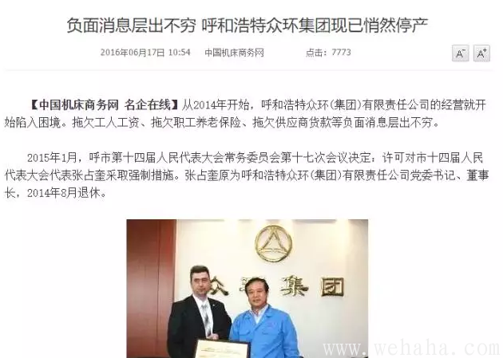

- 穷人需要换多少美元合适？
- 刀客之家 7个月前 (03-23)
- 穷人嘛，危机的时候，首先考虑的并不是资金安全，而是有命活下去。在危机时，失业是普遍现象，基本要按照没收入来考虑。在这种情况下，只能靠储备或者救济过活，救济这个事情到时候看ZF了，自己能控制的就是储备。危机时，本币通常是贬得一塌糊涂的，也就是
共 4703 人阅读，发现 0 个评论
- 虚弱的人民币“强势”
- 美元信用 3年前 (2013-05-30)
- 人民币的强势是很令人不安的，突破了6.16.几周前我和朋友在某地吃饭时问及美元黑市，美元价格已经上扬了。而五年期NDF合约为6.38。市场绝不相信人民币可以强势如此。同时最近突然对两件事喧嚣尘上，一是官媒罕见
共 449 人阅读，发现 0 个评论

- 天津马拉松奖金美元临时换人民币遭拒领
- 美元信用 3年前 (2013-05-28)
- 据《南都深度》微博爆料，2013年第二届天津国际马拉松曝出奖金缩水门事件。组委会竟然用人民币替代美金作为奖金发放，目前包括30名肯尼亚选手在内的大部分选手都在赛后拒接领奖，他们仍然在现场等待组委会的说法。今天
共 456 人阅读，发现 0 个评论
- 换美元正逢其时 人民币1:6是极限
- 美元信用 3年前 (2013-05-01)
- 最近人民币持续升值,一些人嘲笑换美元的.其实何必呢?人民币持续天量超发是不争的事实.人民币汇率贬值是未来发展的必然,就算其现在不贬值也不代表其安全,就算其现在还升值也不代表其有持有价值.人民币现在是高危货币,央行为了证明人民币很安全,还在玩
共 589 人阅读，发现 0 个评论

- 本次人民币升值源于海外投机
- 美元信用 4年前 (2013-04-29)
- 虽然近日偶有回调，但人民币兑美元中间价4月份以来连创新高，并一度创汇改以来人民币兑美元中间价史上新高点的态势，仍令市场预期有些扑朔迷离。人们注意到央行并未采取干预措施，似乎仍在观望。但与此同时，央行表态将“扩大外汇市场人民币兑美元汇率浮动幅
共 285 人阅读，发现 0 个评论

- 换美元保值 什么时候换？
- 美元信用 4年前 (2013-04-27)
- 1、为什么要换美元，换美元的目的是什么？换美元的目的是降低持有单一货币带来的风险。2、什么时候换美元？个人认为，对一般的人，从2012年的第二季度开始可以逐步换，每三个月到半年换一次，到2013年年底要换完。如果是基金，那就要更早一点开始，
共 561 人阅读，发现 0 个评论

- 美元必然升值和兑换美元需要注意的事项
- 美元信用 4年前 (2013-04-27)
- 我的理解是美国已经完成了全部的布局，中国经济已经进入了完全无法转身产业结构极其畸形的死胡同中，产能严重过剩和极其壮观的中国楼市和中国政府投资，这个时候，应该是美国从中国楼市暴跌中大赚其钱的时候了。中国楼市暴涨美国人能大赚（从2009年底20
共 500 人阅读，发现 0 个评论
- 关于换美元的一系列问题
- 美元信用 4年前 (2013-04-27)
- 首先，我不知道你要不要换美元（下面就美元、外币混用了）？我不支持也不反对，换与不换都是投资，换多换少也是投资，投资是你自已的事，没有人帮得了你。1、为什么想换美元？想到要换外币的，如果你可以换10万以上，你已是富人了，而且在以前的生活中你是
共 515 人阅读，发现 0 个评论
热门文章
好文推荐
更多
- 时寒冰：剖析楼市真相与趋势（万字长文）
- 2016年09月25日
- 写在前面：杜鹃泣血建言，遮掩不了一个民族的伟大光环，多一...

- 时寒冰：剖析中国股市之趋势
- 2016年09月18日
- 剖析中国股市趋势时寒冰关于中国股市，很久没有谈及了。常看...
- 
- 神州经济失速可能多大？普通人将受何影响？
- 2016年09月03日
- 上周有不少读者告诉财迷说认同现在不少人稍过自信这个问题，...

- 如松： 洪水、汇率、黄金，之后哪？
- 2016年07月07日
- 今日以前，湖北、安徽和苏南地区遭遇洪水，虽然这个社会有很...

- 如松：扶桑的游戏
- 2016年02月29日
- 这是作者已经删除的文章！《梁书·扶桑国传》：齐永元元年，...

- 如松：白银算盘
- 2014年06月19日
- 中国历史上的所有重大事件，只要有足够的数据，都可以从货币...